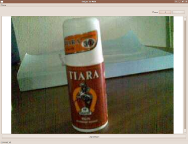
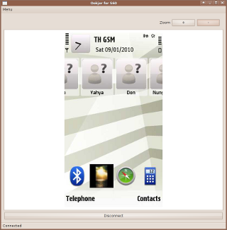

Ookjor shows S60 3rd and 5th edition phones’ cameras and screens live on the computer - for teaching, demonstrating products via the live-camera, demonstrating S60 phone usage and S60 software - wirelessly via Bluetooth.
 
Ookjor is Free Software. Released under the GNU GPL.
Make your donation for this free software
See Ookjor in action - See more Ookjor screenshots
You can connect your computer or notebook to a projector (or big LCD TVs that have s-video or HDMI ports) in a meeting room, class room, event hall and then:
(Ookjor would start the phone-camera streaming after connected) - Show and demonstrate new products and services (in stores, shopping-malls, event halls, etc) - Show what you write or the diagrams you draw on paper - Show how to use equipment - Teach how to do scientific experiments - Show how to cook - Show the person speaking
(After Ookjor is connected, press “Done” on phone to switch to live mobile-screen streaming instead of live camera) - Showcase and demonstrate how to use mobile phones (at events, phone stores, etc.) - Showcase and demonstrate how to use mobile software applications and games.
Extract the zip/archive file (right-click, “Extract here”), select the “Ookjor.sh” file right-click > properties > permissions > make sure the “allow to execute” checkbox is checked. (or in terminal: chmod +x Ookjor.sh)
Double click the “Ookjor.sh” file, select “Run”, or in terminal: ./Ookjor.sh in this directory.
Ookjor would start the live camera view display on the computer, ready to use! Press the Zoom + or - buttons in the computer Ookjor to adjust.
If you want to show mobile screen instead of the camera view, select “Done” on mobile while connected.
Ookjor is Free Software. Released under the GNU GPL. Developed by Kasidit Yusuf.
Please visit: the Ookjor page on github.
<support[AT]clearevo.com>.blog comments powered by Disqus